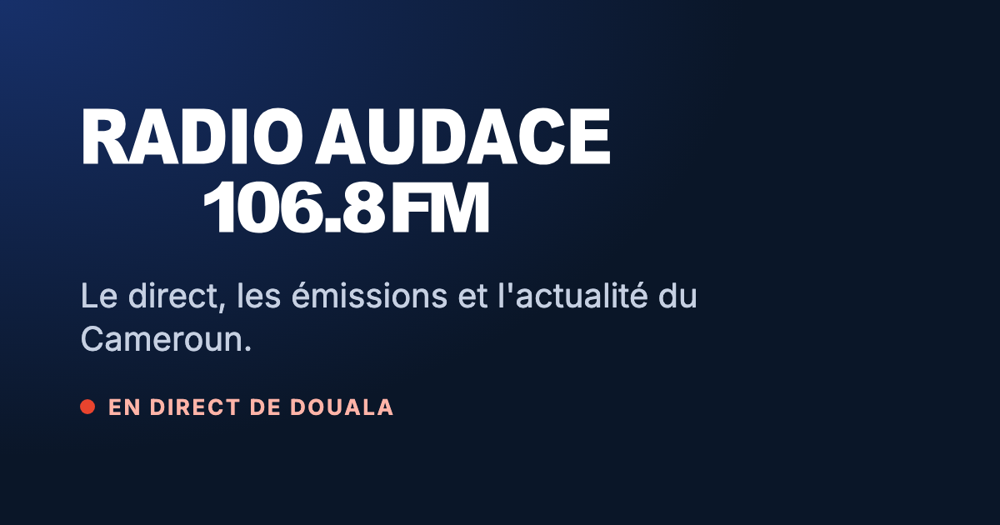

Tout ce qui est au-dessus est la page elle-même ; cette note n'en fait pas partie. Adresse proposée : radioaudace.com/ecouter. C'est ce lien que l'on envoie.
Ce que voit la personne qui reçoit le lien
WhatsApp, Facebook et X affichent une fiche avec image, titre et description. Un appui ouvre le lecteur ci-dessus.

Écouter Radio Audace 106.8 FM en directLe direct de Douala, où que vous soyez. Un appui et la radio joue.radioaudace.com
https://www.radioaudace.com/ecouter
Comment la page se comporte
Un seul geste : le gros bouton lance le direct. Le son ne peut pas partir tout seul à l'ouverture, les téléphones l'interdisent ; il faut un appui.
Elle dit ce qui passe vraiment : émission en ligne, titre musical ou simplement « Radio Audace », avec les mêmes données que le reste du site, rafraîchies chaque minute. À essayer : émission, musique, aucune information.
Le cadran 106.8 : l'aiguille cherche la station pendant la connexion, puis se fixe et s'allume quand le son joue.
Écran verrouillé : le téléphone affiche « Radio Audace » et le titre en cours, avec lecture et pause, comme une application de musique.
Page légère : ni en-tête, ni pied, ni articles ; elle s'ouvre vite, même sur une connexion lente.
Faire suivre : deux boutons en bas, WhatsApp et copie du lien, pour que l'auditeur partage à son tour.